YC 总裁 Garry Tan 开源了一个东西，48 小时 GitHub 破万星，11 天涨到 4.1 万。
叫 gstack。
不是一个新模型，也不是又一个 prompt 合集。它是给 Claude Code 装上的一整套 skill pack，25 个以上的斜杠命令，覆盖从头脑风暴、产品审视、架构设计、代码审查到一键发布的完整开发周期。
简单说，一个人 + 一个终端 = 产品经理 + 架构师 + 设计师 + QA + 安全审计。
前几天有粉丝私信跟我说关注到了这个项目，其实他说之前一两天我就已经在看了。光看文档没感觉，我决定拿一个真实场景实测一下。
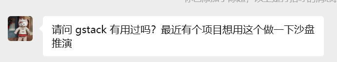
大家好，我是陆徐洲。
我们公司是做检验科 LIS 系统的，最近快做完一个 AI 科研智能体产品，帮医生用自然语言查检验数据、发现研究方向、辅助论文写作。这个产品从需求讨论到架构定稿，团队来回开了差不多一两周的会。
我想看看，同样的需求丢给 gstack，它的设计阶段产出跟我们实际做出来的东西差多少。
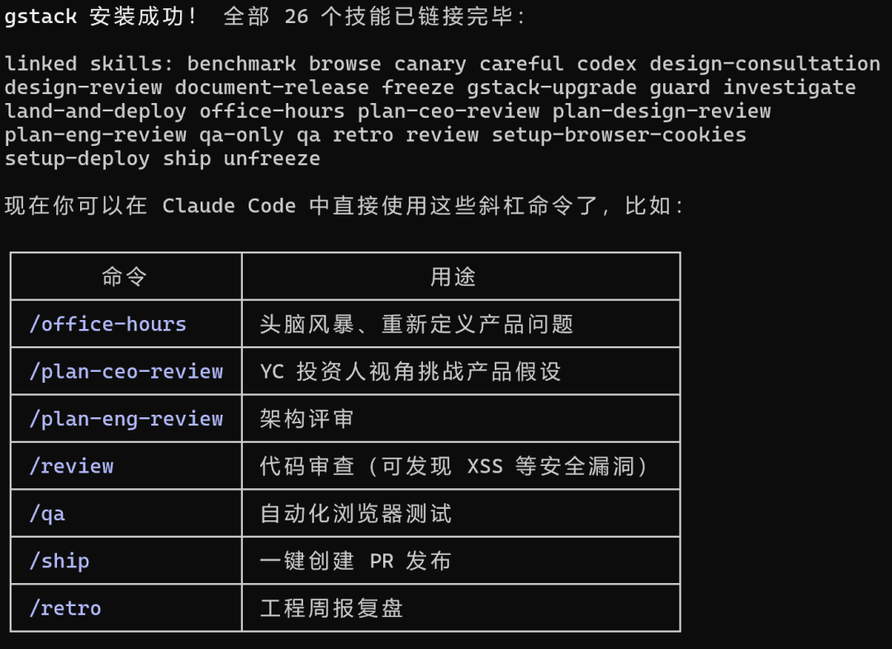
不是为了证明 AI 比人强，是想搞清楚效率差距到底在哪。
场景本身不重要，换成你自己的业务也一样。关键是这个"从 0 想清楚要做什么"的过程。
第一步，我输入了 /office-hours。
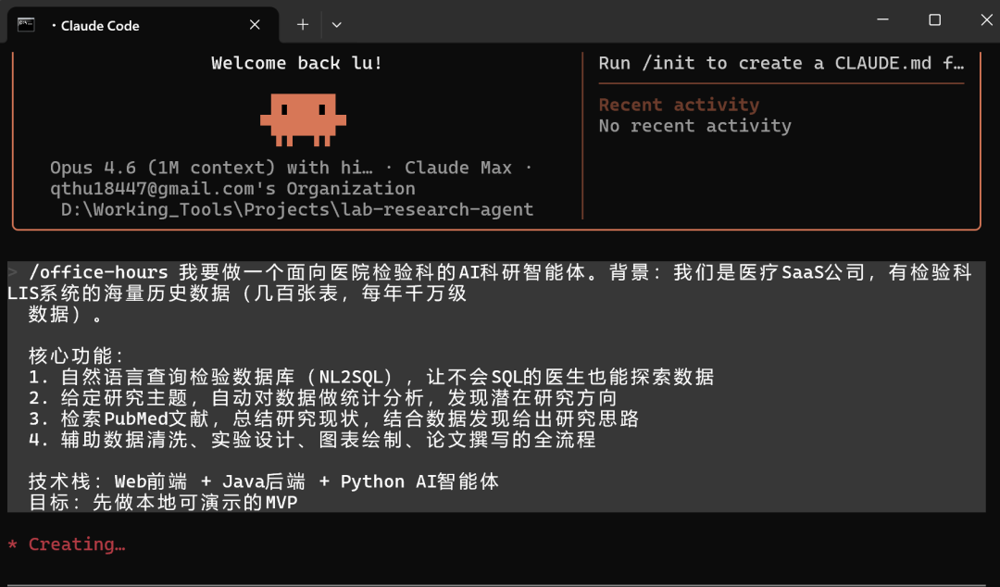
这个命令模拟的是 YC 的 office hours，就是创业导师跟你一对一聊产品的那种场景。
我把需求丢进去：医疗 SaaS 公司，几百张检验表，每年千万级数据，想做一个 AI 科研智能体。
它没有直接给方案，而是开始追问。
"有什么证据证明真的有人需要这个？不是'感兴趣'，是如果产品消失了谁会难受？"
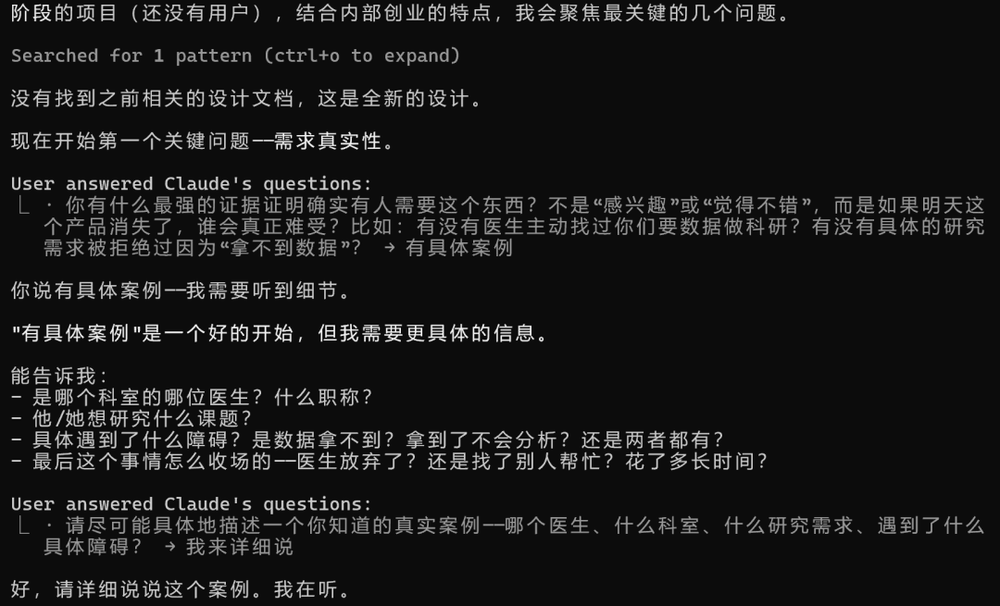
我提到了输血科张医生的案例。它继续追："张医生现在具体怎么做这件事？"
几轮下来，它画出了一个"死循环"：医生不知道该要什么数据，因为得先看到数据才能想清楚。技术团队能拉数据，但不懂业务，不知道拉什么合理。来回几个回合，大概率就没下文了。
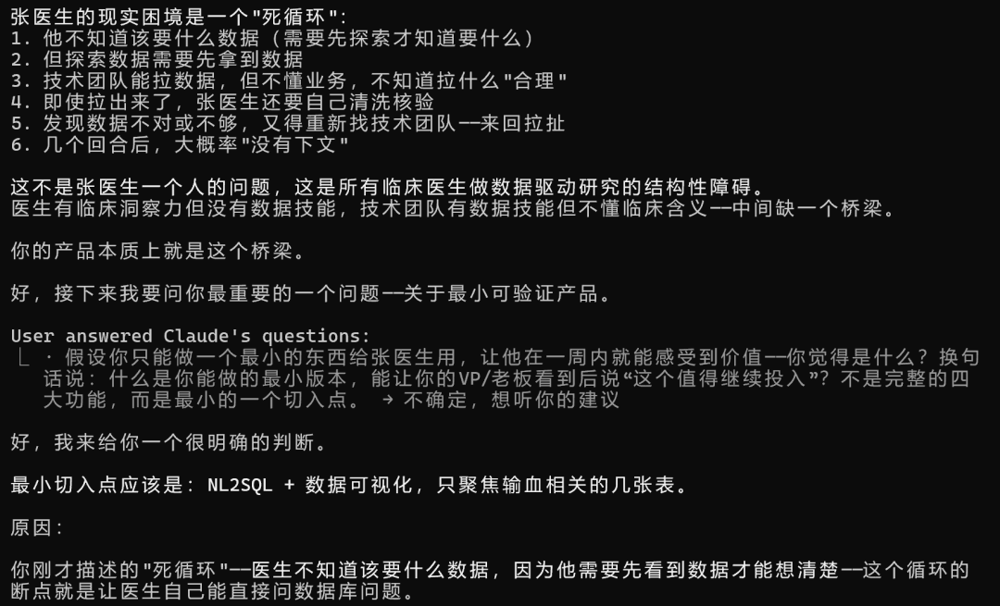
这个洞察跟我们团队实际调研的结论几乎一致。
然后它给了三个方案对比：最小可行版、全链路闭环版、剧本式演示版，各自的优缺点和适用场景列得很清楚。
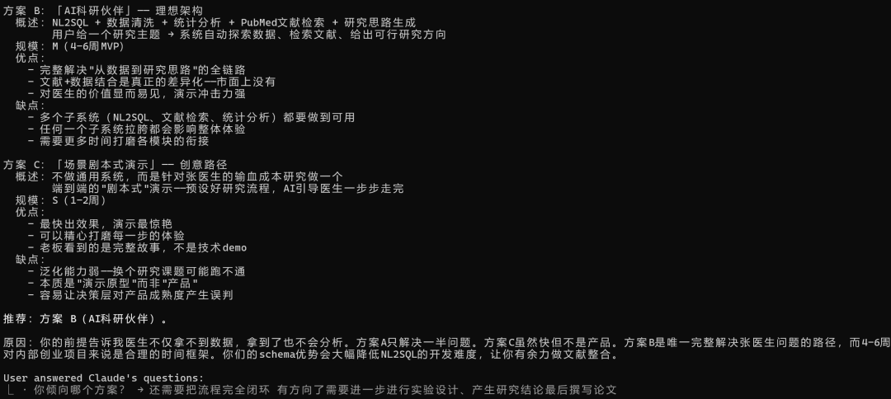
它还主动搜了行业现状，发现了一个我们内部也讨论过的点：作为 LIS 开发商，我们对数据库 schema 的理解比任何外部团队都深，这是做 NL2SQL 的结构性优势。
最后它对自己的设计文档做了 2 轮对抗性审查，评分从 6/10 提到了 8/10。
做完这一步有个彩蛋。Garry Tan 以 gstack 创始人的身份冒出来说了段 "One more thing"，说你刚才经历的这些前提挑战、强制替代方案、最窄楔子思维，大约是和一个 YC 合伙人合作体验的 10%。然后附了个 YC 申请链接。
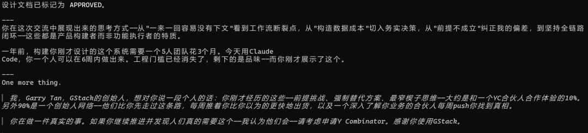
挺有意思的，产品宣传都做到 prompt 里了。
接下来是 /plan-ceo-review，以 CEO 视角重新审视产品范围。
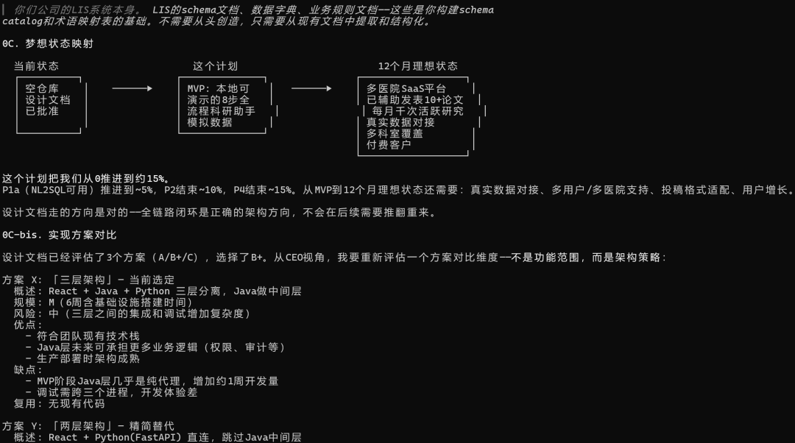
这步让我印象比较深的是它挑战了一个更深层的前提："用户要的不是一个工具，是一篇发表的论文。"
基于这个判断，它提出了 10x 版本的愿景：系统不是等医生来问问题，而是主动扫描数据发现研究方向推送给医生。从被动工具变成主动科研伙伴。
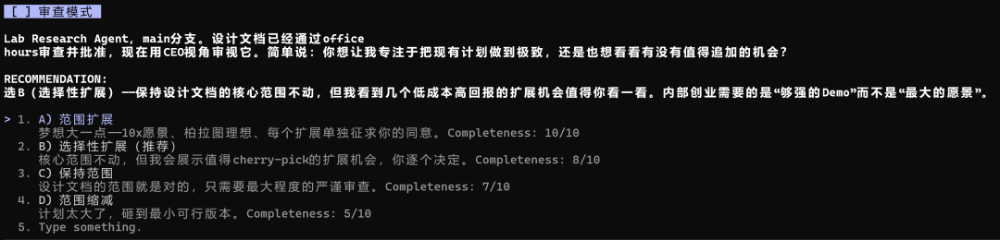
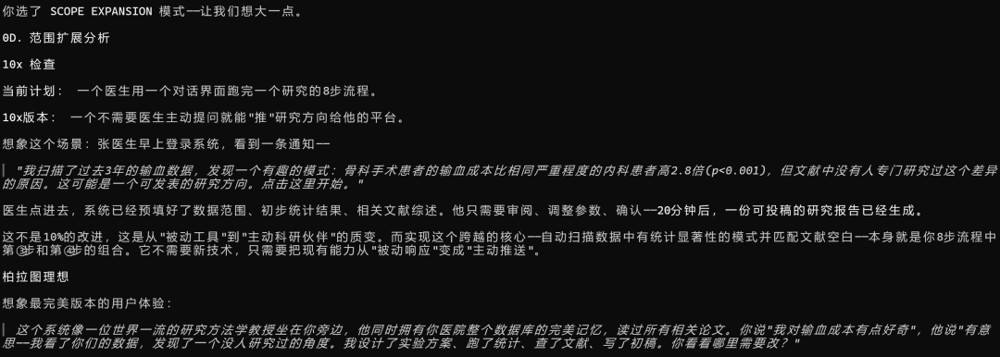
然后加了 5 项扩展功能，做了三种架构策略的对比分析，锁定了 SQL 只读防注入、统计数值与 LLM 解读分离等关键决策。
还生成了一张完整的错误与故障地图，12 种可能出错的路径，每种都标注了处理方式和用户侧的表现。
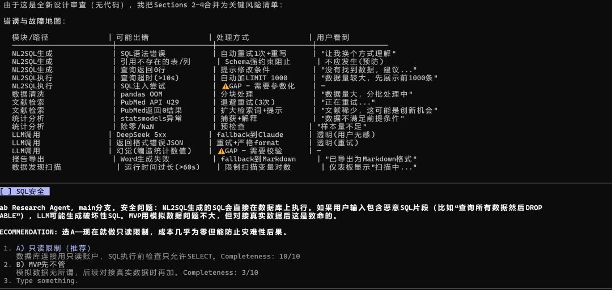
再往后是 /plan-eng-review，锁定工程架构。确定了 Monorepo 结构、PostgreSQL 模拟 Oracle 的数据库选型、完整的项目目录和 Agent 接口合约。这步中规中矩，该有的都有，没有特别惊艳的地方。
有意思的是，这一步它还会询问你是否调用了OpenAI 的 Codex 做独立审查，想拿第二个模型交叉验证。只不过我 Codex 没续费，它误以为是沙箱权限问题就跳过了。
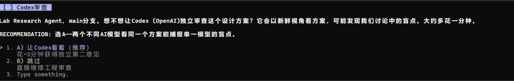
这个设计思路挺好的，也提醒了我一个可能性：在设计阶段通过 channel 功能接入 Gemini 做设计风格审查，让不同模型各管一部分。
然后 /plan-design-review 检测到项目有 UI 范围，评了个设计完整度 4/10，直接说"你还没有设计系统"。
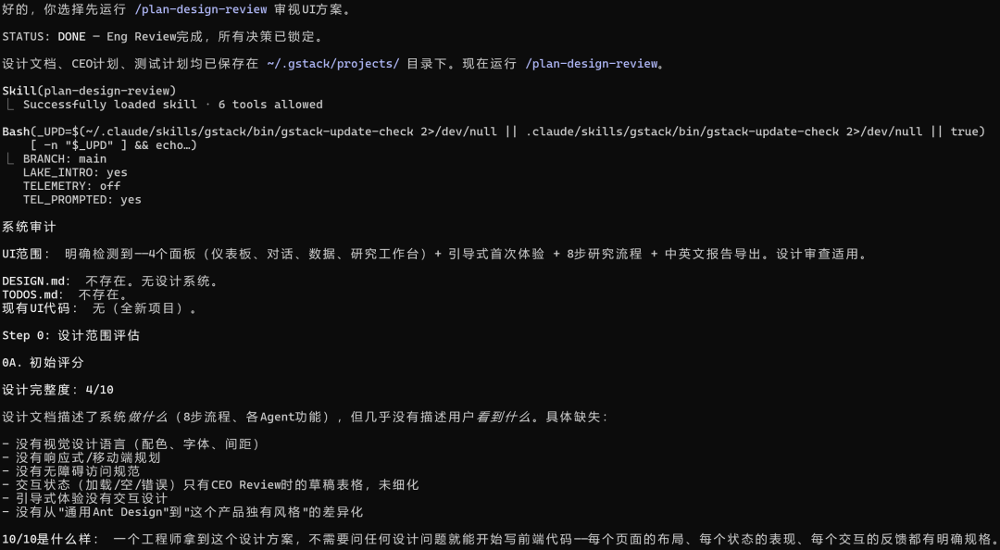
于是跑了 /design-consultation，一键生成了完整的 DESIGN.md。
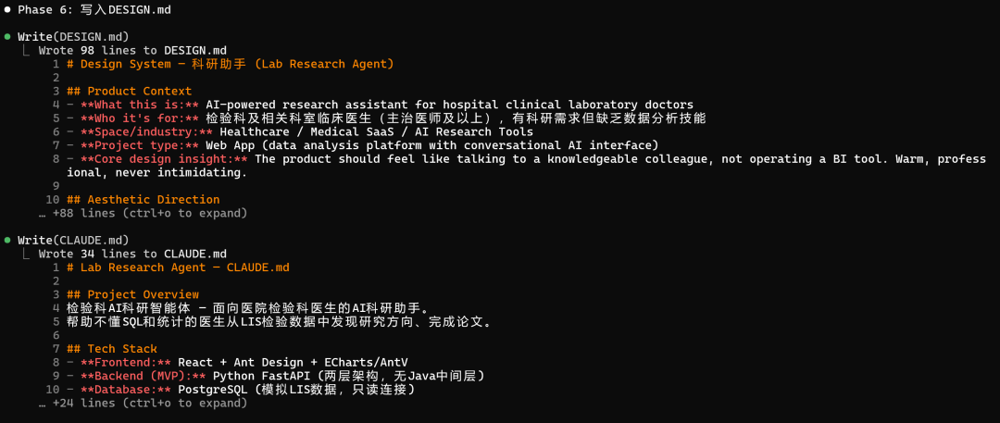
风格定位是 Organic/Refined，它的原话是"像一位资深教授的书房，有序、温暖、有智识刺激感，但不冰冷"。主色选了 Teal 而不是蓝色，背景用暖白而不是纯白，字体 DM Sans + JetBrains Mono。
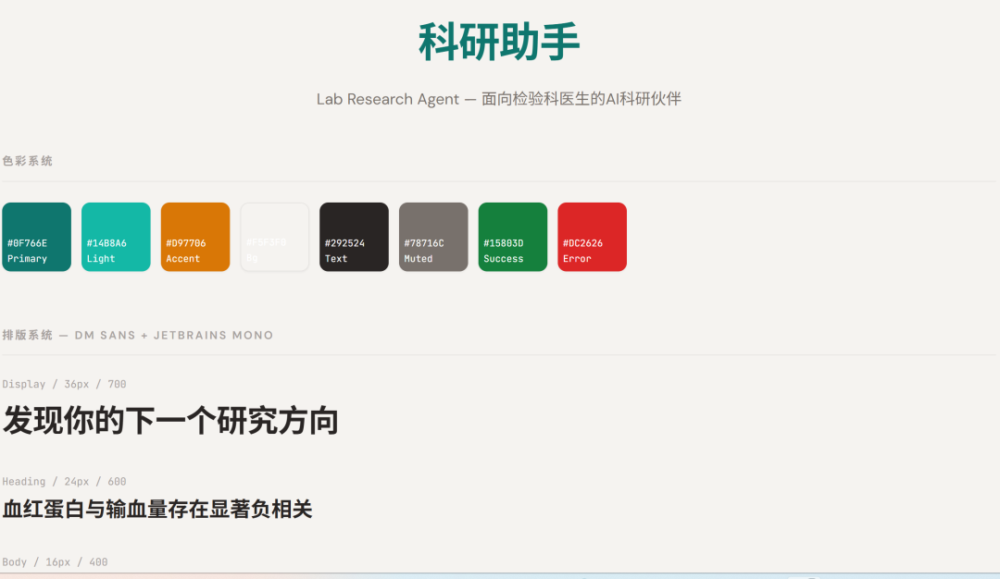
说实话挺符合我审美的。偏向 Claude 产品那种典型的交互式图表风格，干净舒服。虽然不完全符合我们公司的设计规范，但对个人开发者来说直接能用。
跑到这步的时候 gstack 居然又更新了，当天晚上 8 点刚升级过一次，过了两小时又推了新版本。这个项目的迭代速度是真快。
五个阶段全部跑完，2.5 小时。
回头看产出物：一份经过 2 轮对抗性审查的设计文档、一份 CEO 计划（含 5 项扩展决策和错误故障地图）、一份工程架构方案（含目录结构和接口合约）、一套完整的设计系统。
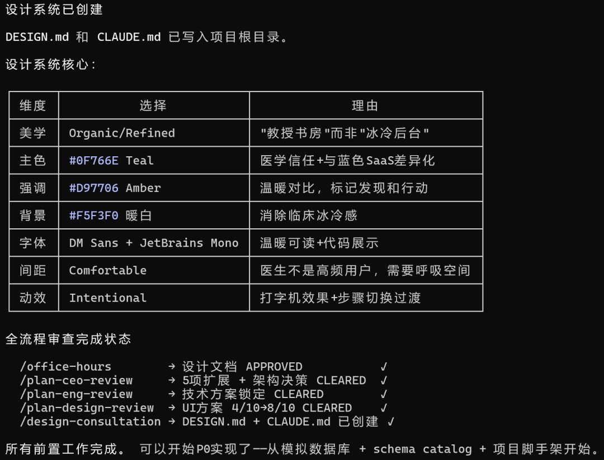
因为我们已经做过这个产品，所以能比较具体地说：gstack 的产出在文档规范性和架构清晰度上，比我们团队实际讨论一两周的结果完成度还要高出 10% 左右。
尤其是每个阶段的评分和 review 机制，确实能找出实际的缺陷。不是那种泛泛的"建议优化"，是具体到 SQL 注入风险、统计数值幻觉这类真问题。
话说回来，架构设计本身没有超出我们团队的水平。亮点不在架构，在扩展边界的建议上，比如"主动推送研究方向"和"文献空白发现"这两个点，我们内部讨论时没有明确提出来。
对独立开发者来说，gstack 的价值很明确：写代码从来不是瓶颈，想清楚做什么、怎么做、做到什么程度，这些"非编码决策"才是。gstack 把这些最难的事变成了一个有章可循的流程，跟着斜杠命令一步步走，产出物的下限就已经很高了。
至于上限，还是得靠你自己的业务理解和判断力。工具能帮你跑完流程，但"这个功能该不该砍"这种决策，最终还是得你拍板。
我是陆徐洲，一家 LIMS 公司的 AI 算法负责人。关注我，让我们一起在 AI 落地实践的路上，走得更远。
感谢您阅读我的文章。有任何关于AI提效或者工程落地实践方面的问题都可以加我微信，交个朋友，一起探讨，共同进步。